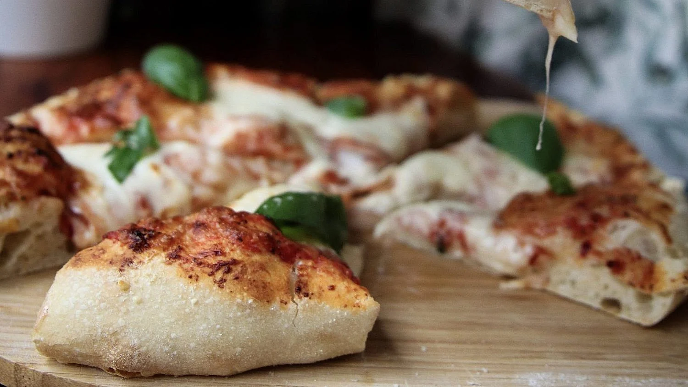

The history of pizza began in antiquity, as various ancient cultures produced flatbreads with several toppings. Pizza today is an Italian dish with a flat dough-based base and toppings, with significant Italian roots in history.
A precursor of pizza was probably the focaccia, a flatbread known to the Romans as panis focacius, to which toppings were then added.Modern pizza evolved from similar flatbread dishes in Naples, Italy, between the 16th and mid-18th century.
The word pizza was first documented in 997 CE in Gaeta and successively in different parts of central and southern Italy. Furthermore, the Etymological Dictionary of the Italian Language explains the word pizza as coming from dialectal pinza, 'clamp', as in modern Italian pinze, 'pliers, pincers, tongs, forceps'. Their origin is from Latin pinsere, 'to pound, stamp'.
Using a spatula, mix all the ingredients with 10.6 oz (300 grams) of the flour in the bowl of a stand mixer, fitted with the dough hook, until the dough is as sticky and uniform as possible. Don't knead. Cover well and leave to rest on the counter until morning.
Add the additional 5.3 oz (150 grams) of flour to the bowl and knead on medium speed for about fifteen minutes, until the dough is flexible and smooth.
Put in a greased bowl, covered, and chill in the fridge for up to an hour before you want to make the pizza. It will keep for two or three days and at least once a week I make it and then I have it in the fridge.
When you're ready for pizza, turn the oven on the highest heat and place a stone or a flat baking sheet inside. Divide the dough in half and place on a fairly floured surface (preferably semolina flour), lightly flour the balls and cover for an hour or until the oven is ready.
Using your fingers roll out each dough on a floured surface, in turn, into a pizza of the desired size and thickness. This time I went for a classic pizza: place a heaping tablespoonful of sauce in the center of the dough and gently spread it over the entire dough except for the edges. Sprinkle with a lot of grated mozzarella, parmesan and then some more shredded mozzarella on top. Bake on the stone or the pan for about 7 minutes until the cheese is fairly bubbly and the edges start to brown. Sprinkle with fresh basil and serve.